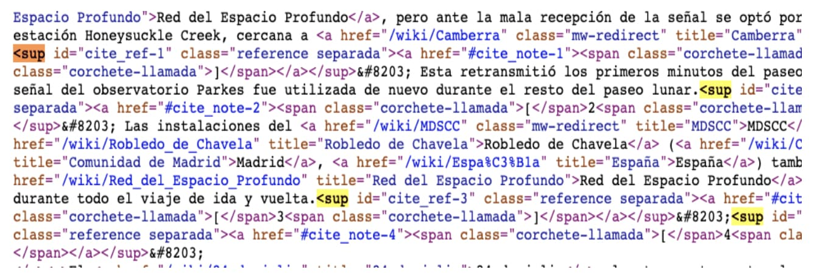

Contenido
1-Etiquetas De Documento.
- 1.1 html
- 1.2 head
- 1.3 body
2-Etiquetas De Meta Datos.
- 2.1 meta
- 2.2 style
- 2.3 title
- 2.4 base
- 2.5 link
3-Etiquetas De Agrupacion.
- 3.1 P
- 3.2 hr
- 3.3 ul
- 3.4 div
- 3.5 figure
- 3.6 figcaption
4-Etiquetas Textuales.
- 4.1 a
- 4.2 span
- 4.3 sub
- 4.4 sup
- 4.5 cite
4-Etiquetas Semanticas.
- 5.1 nav
- 5.2 section
- 5.3 article
- 5.4 header
- 5.5 main
- 5.6 footer

Etiquetas De Documento
1.1:Los diseñadores utilizan el lenguaje HTML para crear páginas web, los programas que se emplean generan páginas escritas en HTML y los navegadores que utilizamos (por ejemplo Google Chrome, Opera o Mozilla Firefox) muestran las páginas web después de leer e interpretar su contenido HTML.
1.2:La HEAD es la primera de las dos partes en que se estructura un documento HTML. En la HEAD reside información acerca del documento, y generalmente no se ve cuando se navega por él. En la HEAD se pone el elemento lleno que es una breve descripción que identifica la página.
1.3:Un body es una prenda de ropa ajustada al cuerpo que cubre el torso y la entrepierna, similar a un maillot o un bañador.
Etiquetas De Meta Datos
2.1:Las meta etiquetas son etiquetas HTML que se utilizan para proporcionar información adicional sobre una página a los motores de búsqueda y otros clientes.
2.2:El atributo global style contiene declaraciones de estilo CSS a ser aplicados a un elemento.
2.3:El tag title (título) es un tag de código HTML que le permite darle un título a una página web.
2.4:El elemento HTML base> especifica la dirección URL base que se utilizará para todas las direcciones URL relativas contenidas dentro de un documento.
2.5:Un link en HTML es una etiqueta que permite crear un hiperenlace, es decir, una referencia que conecta dos o más documentos o secciones dentro de un documento electrónico.
Etiquetas De Agrupacion
3.1:El elemento p (párrafo) es el apropiado para distribuir el texto en párrafos.
3.2:Es una herramienta que se utiliza para crear una línea horizontal que separa contenido y mejora la legibilidad y organización de una página web.
3.3:ul Es un elemento que define una lista desordenada, es decir, una lista en la que los elementos no están ordenados, sino que se muestran precedidos de una viñeta.
3.4:La etiqueta div> en HTML es un elemento que define divisiones lógicas en el contenido de una página web. Se utiliza para agrupar bloques de código, posicionar áreas, y delimitar áreas que se pueden formatear con CSS.
3.5:Es un elemento que permite agrupar contenido independiente, como imágenes, videos, ilustraciones, diagramas, fragmentos de código, o esquemas.
3.6:la etiqueta figcaption es un elemento opcional que se utiliza para agregar un subtítulo o leyenda a un contenido independiente, representado por la etiqueta.
Etiquetas De Textuales
4.1:Es un elemento que permite crear enlaces a otras páginas, archivos, rutas dentro de la misma página, direcciones de correo, o cualquier otra URL.
4.2:Es un contenedor en línea que permite agrupar elementos en una misma línea y aplicarles estilo o atributos.
4.3:Define un fragmento de texto que se debe mostrar, por razones tipográficas, más bajo, y generalmente más pequeño, que el tramo principal del texto, es decir, en subíndice.
4.4:
4.5:Marca una referencia a una fuente, o el autor de un texto citado. Está definido como: Elemento de frase, y por lo tanto en línea. Crea una caja: En línea. Puede contener: Text y/o cero o más elementos en línea.
Etiquetas Semanticas.
5.1:Es una sección de una página que contiene enlaces de navegación a otras páginas o a partes de la página. Su propósito es estructurar y marcar el contenido relacionado con la navegación del sitio.
5.2:Es un elemento semántico que permite crear secciones independientes en una página web. Se utiliza para representar una parte genérica de un documento o artículo, y para determinar qué contenido corresponde a qué parte de un esquema.
5.3:Define un bloque de contenido que es independiente de un documento o sitio, y que se puede distribuir o reutilizar de forma independiente. Por ejemplo, un artículo de revista o periódico, o una entrada de blog.
5.4:Es una etiqueta que define la sección de encabezado de una página web. Es un elemento fundamental en el lenguaje de marcado HTML y se utiliza para contener elementos de introducción o navegación.
5.5: MAIN es una etiqueta de apertura y cierre que se utiliza para agrupar el contenido principal de un documento o aplicación. Es una etiqueta de agrupación general que se coloca dentro del cuerpo de la página.
5.6:El footer HTML es una sección de una página web que se encuentra en la parte inferior y que se traduce como pie de página.